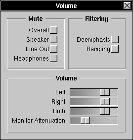

The Volume Panel

The Volume Panel allows you to:
 Change and view the current speaker Volume on your system, with either Left and Right channels, or Both channels at the same time. Further, you can change or view your Monitor Attenuation. Monitor attenuation and stereo channel volumes may not be available on all systems.
Change and view the current speaker Volume on your system, with either Left and Right channels, or Both channels at the same time. Further, you can change or view your Monitor Attenuation. Monitor attenuation and stereo channel volumes may not be available on all systems.
 Toggle your speaker's Deemphasis filter. This is commonly also accessible from the keyboard (Command-UpVolume), though it's not mentioned much in NeXT documentation. The deemphasis filter is a high-frequency filter designed to cut down noise, but also dampens sound quality. Deemphasis may not be available on all systems.
Toggle your speaker's Deemphasis filter. This is commonly also accessible from the keyboard (Command-UpVolume), though it's not mentioned much in NeXT documentation. The deemphasis filter is a high-frequency filter designed to cut down noise, but also dampens sound quality. Deemphasis may not be available on all systems.
 Toggle your speaker's Ramping filter. This filter is mean to give fade in and out (though so quickly it's hard to notice) when you begin and end playing a sound, so you don't hear the DC-offset "clicks". It's part of the NeXT Sound Kit, though I've not noticed much of a difference when it's on. Ramping may not be available on all systems.
Toggle your speaker's Ramping filter. This filter is mean to give fade in and out (though so quickly it's hard to notice) when you begin and end playing a sound, so you don't hear the DC-offset "clicks". It's part of the NeXT Sound Kit, though I've not noticed much of a difference when it's on. Ramping may not be available on all systems.
 Toggle your speaker Overall Mute. This is the mute that's commonly accessible from the keyboard (Command-DownVolume).
Toggle your speaker Overall Mute. This is the mute that's commonly accessible from the keyboard (Command-DownVolume).
 Toggle custom mutes, such as your Speaker Mute, your Line Out Mute, or your Headphones Mute. Some or all custom mutes may not be available on all systems. On these systems, these mutes may all be synonymous with the Overall Mute, so changing one may change them all.
Toggle custom mutes, such as your Speaker Mute, your Line Out Mute, or your Headphones Mute. Some or all custom mutes may not be available on all systems. On these systems, these mutes may all be synonymous with the Overall Mute, so changing one may change them all.
The Volume Panel is automatically updated once a second.